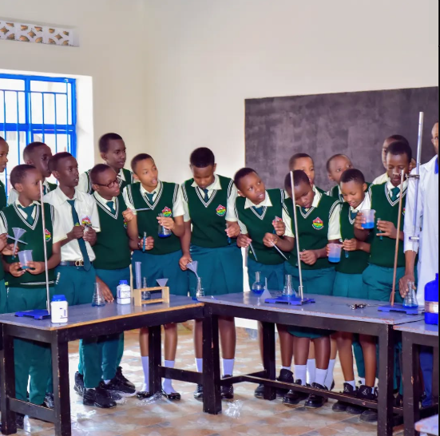

Student Life & Clubs
Student Leadership
The student council promotes leadership, responsibility, and democracy, helping students voice ideas and improve school life.

Clubs & Societies
From ICT and Science to Music and Drama, students explore talents and build teamwork through exciting extracurricular clubs.

Special Events
We host annual Cultural Day, Talent Shows, and Sports Competitions to showcase skills and foster unity and creativity.